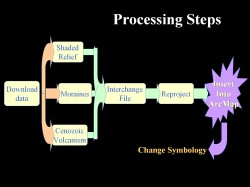
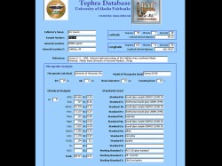
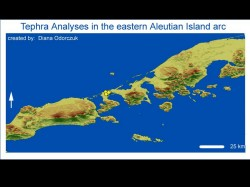

 The study of tephra distribution is an integral part of volcanic hazard assessment and mitigation. Knowing the distribution of tephra deposits can provide vital information about the size, style, and origin of the volcanic event that produced it. Geochemical analysis of glass fragments found within the tephra is thought to be a fingerprint of the magma erupted. The purpose of this study was to organize UAFs tephra geochemical analysis data in a database, and then convert it to a GIS compatable format so that a map showing the geospatial distribution of different tephra types could be generated. Additional Alaska data input in the GIS included a shaded relief image, information on Cenozoic volcanism, moraine distribution, and surficial geology.
 Tephra data was compiled from UAF student theses on tephrachronology, after checking for their quality and compatibility. The data had many associated field and could not be view with ease using a normal spreadsheet or database view. Therefore, a form was created using the Form Wizard in Access. The form, which is shown in the figure, is a user-friendly interface for entering the necessary data, and it is also a convenient tool for viewing data. Data entered through this form goes into a database which can be imported with ease in a GIS.

Last update: 28-Jan-2008
Jim Beget, Geology and Geophysics, UAF